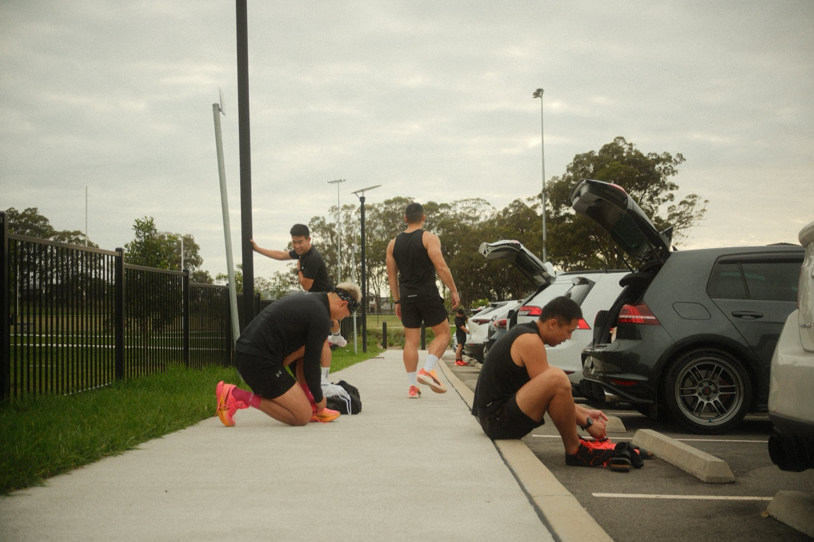
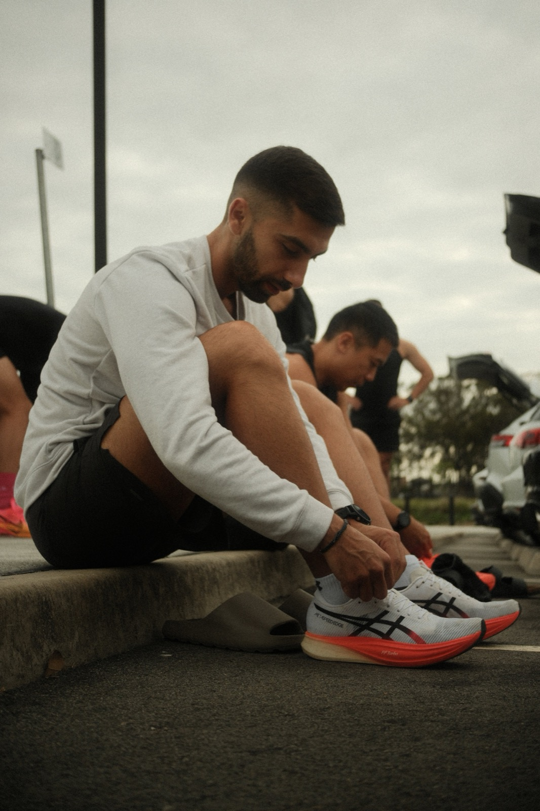
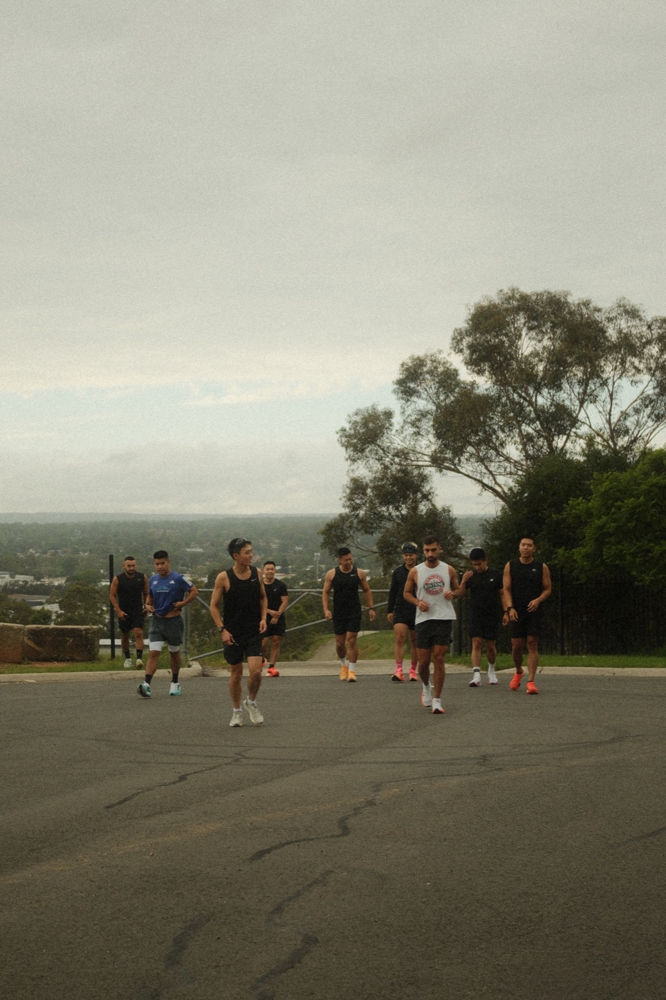
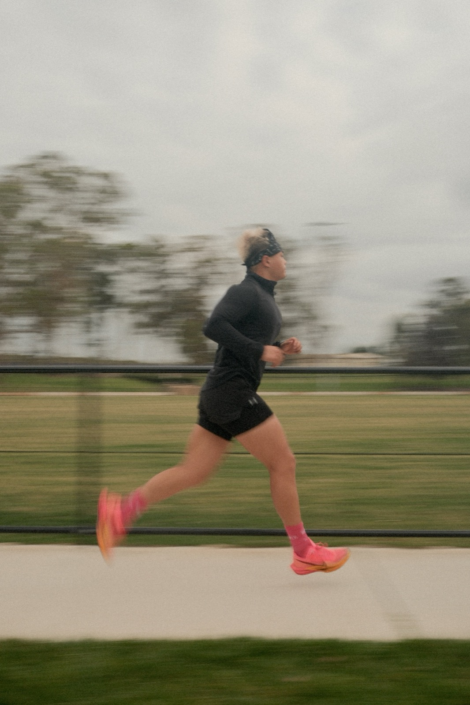
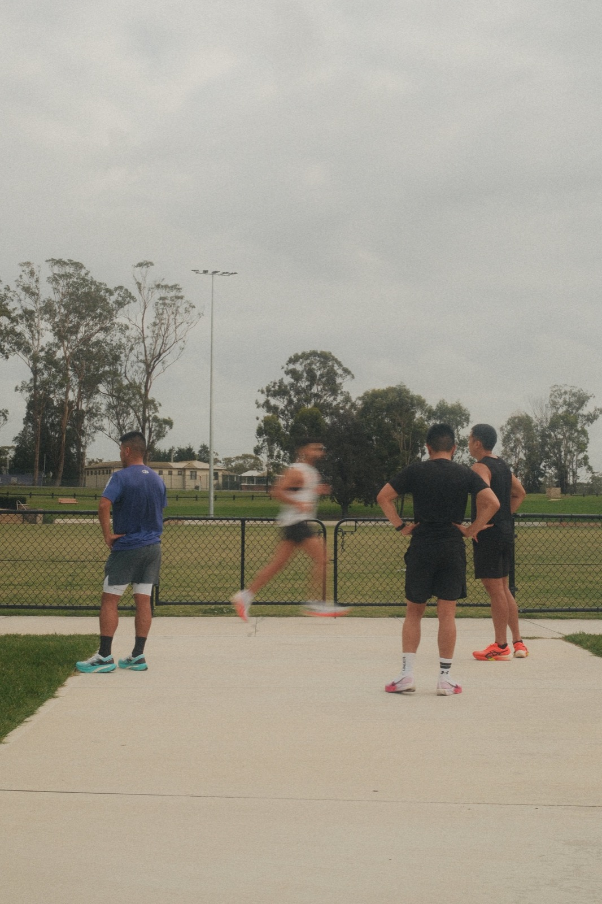
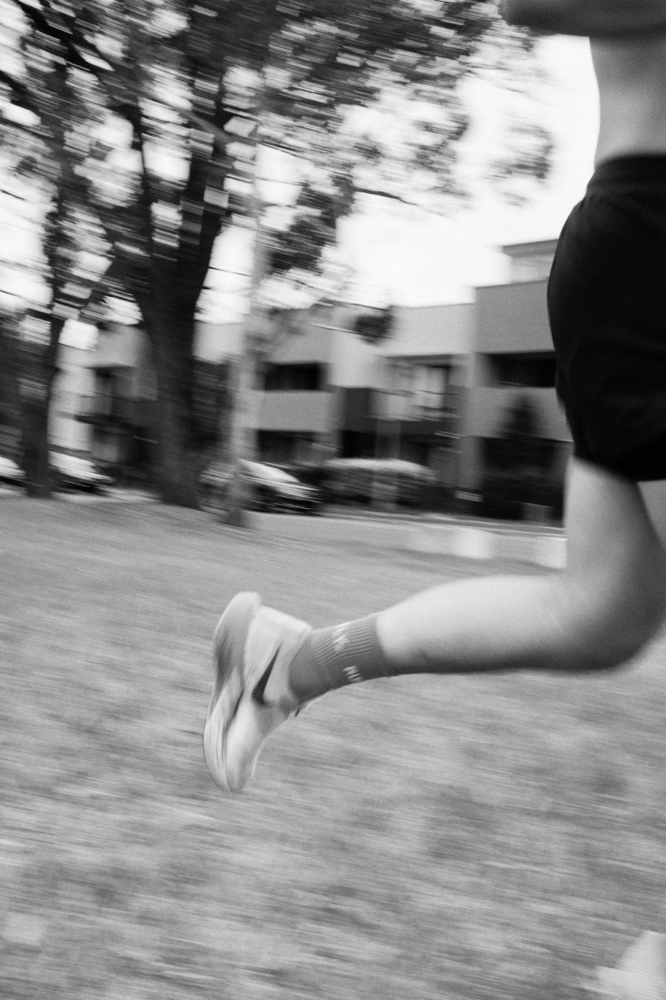
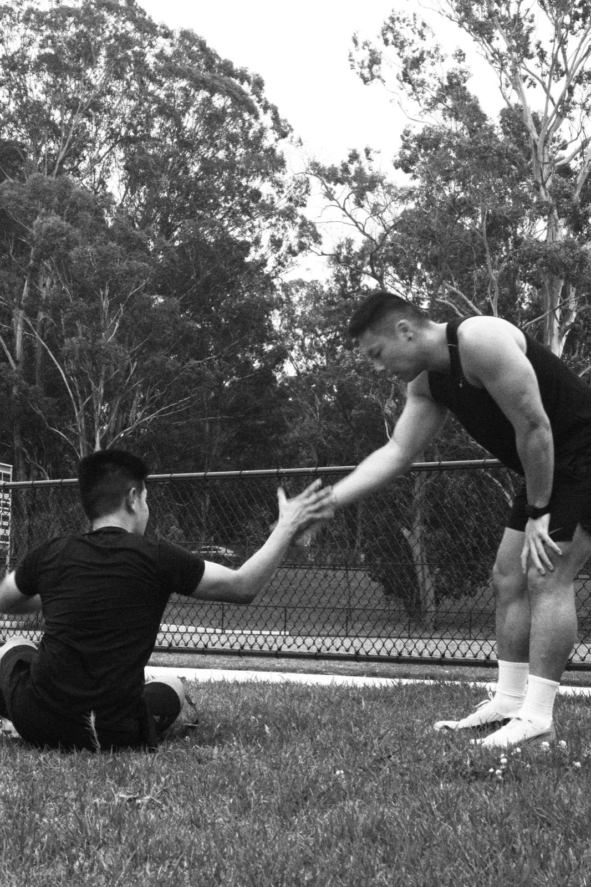
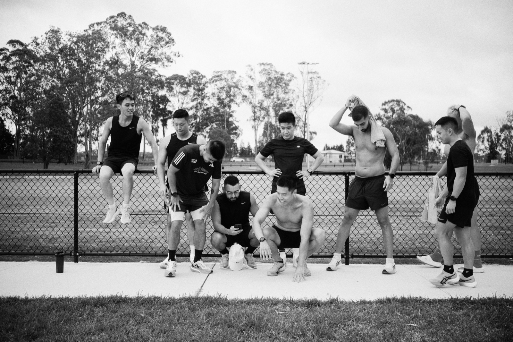
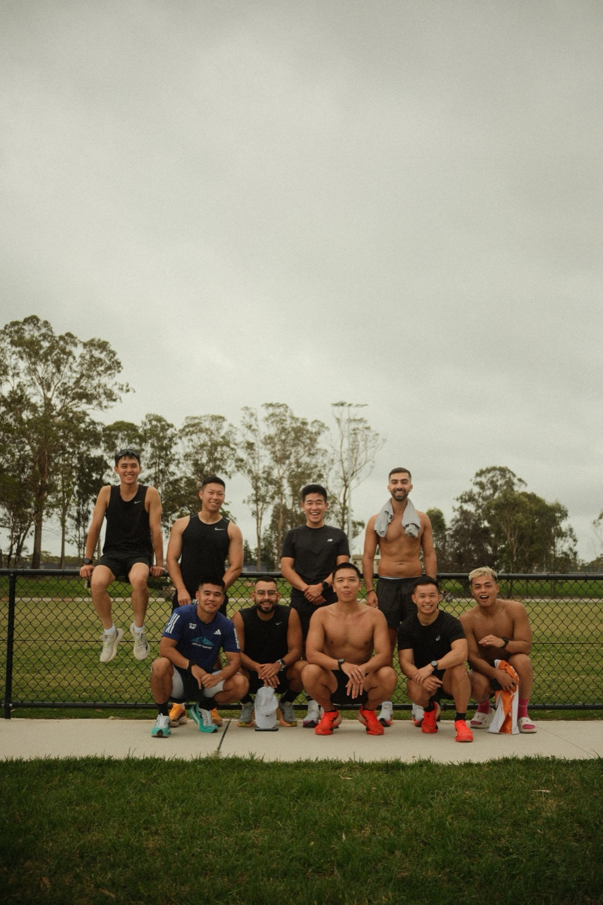

Cadence
Created during my recovery from a running injury, Cadence reflects a shift from participant to observer. Unable to run alongside my community, I turned to photography to remain connected to the rituals and relationships that define the sport. Watching from the sidelines revealed details I might have otherwise overlooked.
Cadence is a visual exploration of the rhythm, camaraderie, and relentless dedication that define the act of running. Through ten images, this series captures members of Runfly in the midst of an interval session - lungs burning, legs turning, bodies moving in sync. It's in these shared efforts that running transcends solitude, becoming something greater: a collective pursuit of strength, discipline, and joy.
Each frame speaks to the unseen mileage, the early mornings, the quiet commitment that makes race day possible. However, I believe running's not just about the finish line - it's about the people beside you, the silent encouragement exchanged in a glance, the power found in moving together.










We are what we repeatedly do. Excellence, then, is not an act, but a habit.